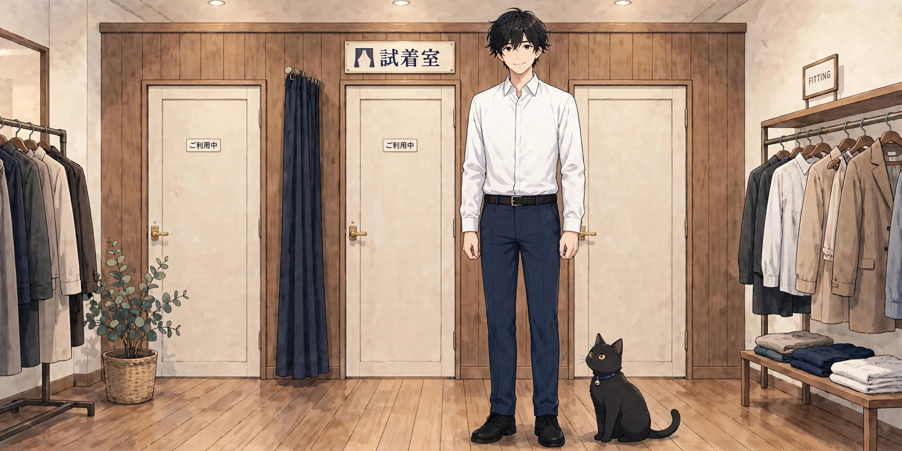

MEN — FASHION FEATURENo.2
お腹まわりが気になる男性のボトムスの選び方（40代）
TEXT — 222工房（セラピスト／パーソナルトレーナー） GUIDE — ケント＆ノクス

ケント：先に結論です。お腹まわりは「ウエスト位置を下げないこと」「裾をためないこと」「ストレッチ素材で座っても苦しくないこと」の3点で見え方が変わります。この記事の商品は、この3点に合うものだけを先に並べます。
この記事の商品（先に比較）
| 商品 | 価格（税込） | お店 |
|---|---|---|
| スラックス メンズ 秋冬用 ブラック系 黒 スタンダード | 2,290円 | 洋服の青山PLUS |
| スリムスラックス メンズ 秋冬 洗える ストレッチ 防シワ | 5,390円 | メンズスーツ スーツデポ |
| SHIPS Colors:＜手洗い可能＞AVANT(R) | 6,149円 | SHIPS シップス |
| BETTY SMITH ベティスミス メンズ スリムパンツ | 9,900円 | M’S SANSHIN（エムズサンシン） |
| HUGO BOSS ヒューゴボス メンズ チノパンツ | 18,900円 | TRE STYLE |
| Elfino エルフィーノ とろみワイドスラックス | 20,900円 | ベンシュナ メンズアパレル＆雑貨 |
| 9分丈テーパードスラックス | 4,180円 | 日野ショップ |
| クールメッシュ トラウザー | 5,500円 | M’S SANSHIN（エムズサンシン） |
| ワイドスーツスラックス | 6,354円 | 感謝マーケット |
| EDWIN デニスラ スリムテーパード | 9,900円 | M’S SANSHIN（エムズサンシン） |
| EDWIN デニスラAIR テーパード | 9,900円 | ジーンズステーション |
基準1：ウエストは本来の位置で
お腹の下で履くと、お腹がベルトの上に乗って目立ちます。ウエストはへその少し下、本来の位置で留めるのが目安です。シャツをインすると位置がずれにくくなります。
基準2：裾はためない
丈が余って裾が靴の上でたまると、それだけでだらしく見えます。裾上げは購入時に済ませて、裾は靴に軽く触れる長さにしてください。
基準3：座って苦しくないストレッチ
立ったときは平気でも、座るとウエストが食い込む素材は避けてください。ストレッチ入りのスラックスなら、見た目はきちんとしたまま座れます。
あえて推さないもの
- ローライズの細身パンツ（お腹が上に乗ります）
- ベルトの穴が最後の1つになっているもの（サイズが合っていません）
- 裾上げをしていない長い丈（清潔感以前の問題になります）
SHOPPING今回のアイテム
この記事の基準に合う商品
特徴：洗えることとストレッチを優先して選びました。価格は2,000円台からあります。
PR：この記事のテーマに合うボトムス（PR）


あわせて読みたい：メンズボトムス種類別ガイド／お腹対策のドローイン
NEXT — 次に読む猫背でジャケットが決まらない人のアウターの選び方（40代）